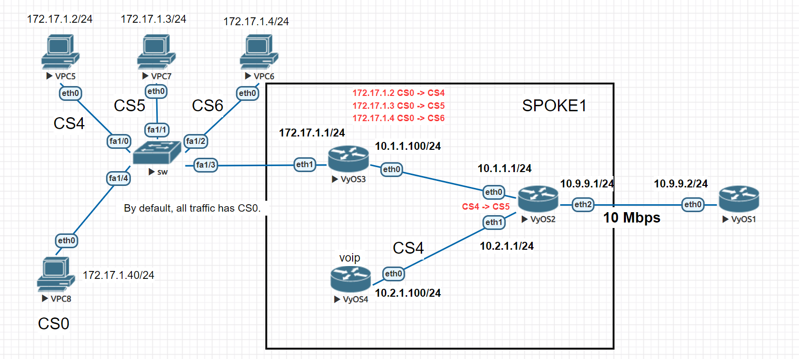
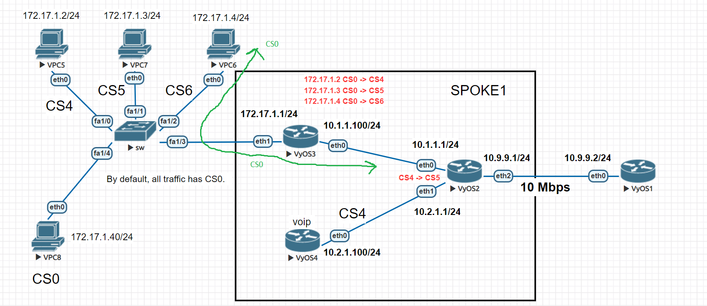
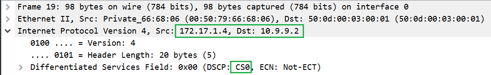
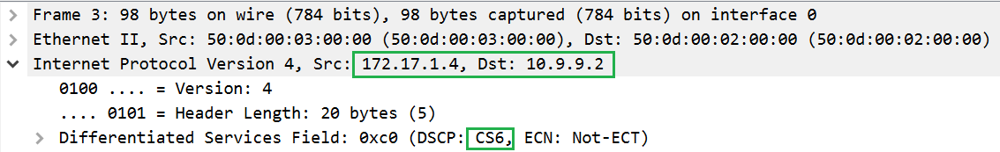
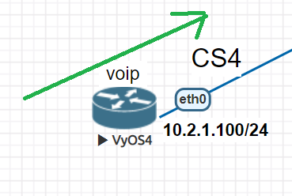
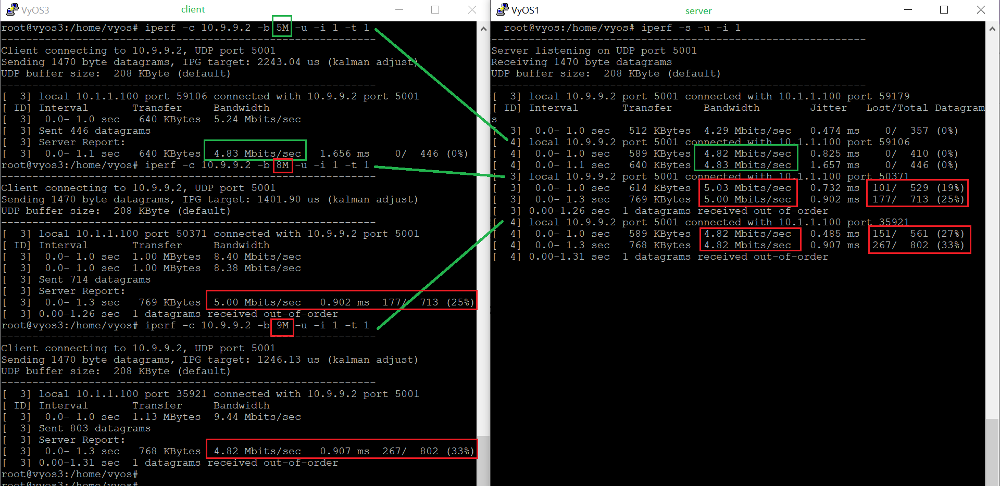

QoS example
Configuration ‘dcsp’ and shaper using QoS
In this case, we’ll try to make a simple lab using QoS and the general ability of the VyOS system. We recommend you to go through the main article about QoS first.
Using the general schema for example:
{kind=link}
We have four hosts on the local network 172.17.1.0/24. All hosts are labeled CS0 by default. We need to replace labels on all hosts except vpc8. We will replace the labels on the nearest router “VyOS3” using the IP addresses of the sources.
172.17.1.2 CS0 -> CS4
172.17.1.3 CS0 -> CS5
172.17.1.4 CS0 -> CS6
172.17.1.40 CS0 by default
Next, we will replace only all CS4 labels on the “VyOS2” router.
CS4 -> CS5
In the end, we will configure the traffic shaper using QoS mechanisms on the “VYOS2” router.
Configuration:
Set IP addresses on all VPCs and a default gateway 172.17.1.1. We’ll use in this case only static routes. On the VyOS3 router, we need to change the ‘dscp’ labels for the VPCs. To do this, we use this configuration.
set interfaces ethernet eth0 address '10.1.1.100/24'
set interfaces ethernet eth1 address '172.17.1.1/24'
set protocols static route 0.0.0.0/0 next-hop 10.1.1.1
set qos policy shaper vyos3 class 10 match ADDRESS10 ip source address '172.17.1.2/32'
set qos policy shaper vyos3 class 10 set-dscp 'CS4'
set qos policy shaper vyos3 class 20 match ADDRESS20 ip source address '172.17.1.3/32'
set qos policy shaper vyos3 class 20 set-dscp 'CS5'
set qos policy shaper vyos3 class 30 match ADDRESS20 ip source address '172.17.1.4/32'
set qos policy shaper vyos3 class 30 set-dscp 'CS6'
set qos policy shaper vyos3 default bandwidth '10%'
set qos policy shaper vyos3 default ceiling '100%'
set qos policy shaper vyos3 default priority '7'
set qos policy shaper vyos3 default queue-type 'fair-queue'
set qos interface eth0 egress 'vyos3'
Main rules:
ADDRESS10 change CS0 -> CS4 source 172.17.1.2/32
ADDRESS20 change CS0 -> CS5 source 172.17.1.3/32
ADDRESS30 change CS0 -> CS6 source 172.17.1.4/32
Check the result
{kind=link}
Before the interface eth0 on router VyOS3
{kind=link}
After the interface eth0 on router VyOS3
{kind=link}
On the router, VyOS4 set all traffic as CS4. We have to configure the default class and class for changing all labels from CS0 to CS4
set interfaces ethernet eth0 address '10.2.1.100/24'
set protocols static route 0.0.0.0/0 next-hop 10.2.1.1
set qos policy shaper vyos4 class 10 bandwidth '100%'
set qos policy shaper vyos4 class 10 burst '15k'
set qos policy shaper vyos4 class 10 match ALL ether protocol 'all'
set qos policy shaper vyos4 class 10 queue-type 'fair-queue'
set qos policy shaper vyos4 class 10 set-dscp 'CS4'
set qos policy shaper vyos4 default bandwidth '10%'
set qos policy shaper vyos4 default burst '15k'
set qos policy shaper vyos4 default ceiling '100%'
set qos policy shaper vyos4 default priority '7'
set qos policy shaper vyos4 default queue-type 'fair-queue'
set qos interface eth0 egress 'vyos4'
Next on the router VyOS2 we will change labels on all incoming traffic only from CS4-> CS6
{kind=link}
set interfaces ethernet eth0 address '10.1.1.1/24'
set interfaces ethernet eth1 address '10.2.1.1/24'
set interfaces ethernet eth2 address '10.9.9.1/24'
set protocols static route 172.17.1.0/24 next-hop 10.1.1.100
set qos policy shaper vyos2 class 10 bandwidth '100%'
set qos policy shaper vyos2 class 10 burst '15k'
set qos policy shaper vyos2 class 10 match VYOS2 ip dscp 'CS4'
set qos policy shaper vyos2 class 10 queue-type 'fair-queue'
set qos policy shaper vyos2 class 10 set-dscp 'CS5'
set qos policy shaper vyos2 default bandwidth '100%'
set qos policy shaper vyos2 default burst '15k'
set qos policy shaper vyos2 default ceiling '100%'
set qos policy shaper vyos2 default priority '7'
set qos policy shaper vyos2 default queue-type 'fair-queue'
set qos interface eth2 egress 'vyos2'
{kind=link}
172.17.1.2/24 CS0
{kind=link}
172.17.1.2/24 CS0 - > CS4
{kind=link}
172.17.1.2/24 CS4 - > CS5
{kind=link}
In the end, on the router “VyOS2” we will set outgoing bandwidth limits between the “VyOS3” and “VyOS1” routers. Let’s set a limit for IP 10.1.1.100 = 5 Mbps(Tx). We will check the result of the work with the help of the “iPerf” utility.
Set up bandwidth limits on the eth2 interface of the router “VyOS2”.
vyos@vyos2# show qos policy shaper vyos2 class 20
bandwidth 5mbit
description "for VyOS3 eth0"
match VyOS3 {
ip {
source {
address 10.1.1.100/32
}
}
}
Check the result.
{kind=link}
As we see shaper is working and the traffic will not work over 5 Mbit/s.